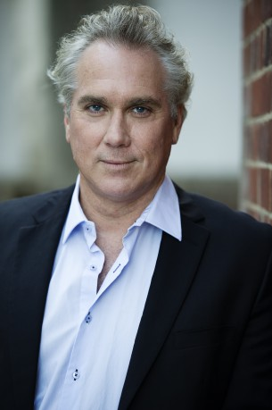

#3611 Daybreakers 


 IMDB-Wertung: 6.5 / 10
IMDB-Wertung: 6.5 / 10  Metascore: 0
Metascore: 0 
In der Zukunft ist die Menschheit fast komplett ausgestorben. Vampire beherrschen die Welt. Allerdings benötigen diese Blut um zu überleben. Also forscht der Vampir Dr. Edward Dalton nach einem künstlichen Weg den Lebenssaft zur Ernährung der Blutsauger herzustellen. Als er auf eine Gruppe Menschen stößt, die entdeckt hat dass der Vampirismus heilbar ist, ändert er seine Pläne und hilft den Sterblichen. Allerdings ist nicht jeder Untote von der Idee begeistert wieder ein Mensch zu werden...
Jahr: 2009
Dauer: 97 Minuten
FSK: 16
Land: Australien Studio: Sunfilm EntertainmentTonspuren:
Untertitel: Deutsch,
Auflösung: 1080p (1920x1080) Größe: 8366 MB
Genre: Action, Thriller, Horror, Sci-Fi
Regisseur: Michael Spierig, Peter Spierig
Drehbuch: Roderick Taylor
Soundtrack:
Darsteller:
 Jay Laga'aia als Senator Turner
Jay Laga'aia als Senator Turner-  Damien Garvey als Senator Westlake
- Ben Siemer als Police Officer
 Ethan Hawke als Edward Dalton
Ethan Hawke als Edward Dalton- Tiffany Lamb als News Reader
- Chris Brown als Subway Commuter
 Sam Neill als Charles Bromley
Sam Neill als Charles Bromley Vince Colosimo als Christopher Caruso
Vince Colosimo als Christopher Caruso- Todd Levi als Commissioner Turnbull
- Claudia Karvan als Audrey Bennett
- Mungo McKay als Colin Briggs
- Emma Randall als Ellie Landon
 Michael Dorman als Frankie Dalton
Michael Dorman als Frankie Dalton- Robyn Moore als Forensic Investigator Simms
 Willem Dafoe als Lionel 'Elvis' Cormac
Willem Dafoe als Lionel 'Elvis' Cormac Christopher Kirby als Jarvis Bayom
Christopher Kirby als Jarvis Bayom- Glen Martin als Coffee Buyer
 Isabel Lucas als Alison Bromley
Isabel Lucas als Alison Bromley- Candice Storey als Onlooker
- Mark Finden als Young Vampire Cadet
- Byron J. Brochmann als Vampire Soldier , uncredited
- Selina Kadell als Debate News Anchorwoman , uncredited
- Harriet Minto-Day als Lisa Barrett
- Sahaj Dumpleton als Homeless Vampire
- Allan Todd als Businessman
- Gabriella Di Labio als Businesswoman
- Peter Welman als Police Officer
- Callum McLean als Vampire School Kid
- Jarrad Pon als Vampire School Kid
- Victoria Williams als Vampire School Kid
- Zoe White als Vampire School Kid
- Aolani Roy als Vampire School Kid
- Renai Caruso als Coffee Shop Attendant
- Kirsten Cameron als Subway Commuter
- Carl Rush als Al Walker
- Paul Sonkkila als General Williams
- Wayne Smith als Inmate 4075B
- Berni Chin als Lab Technician
- Kevin Zwierzchaczewski als Lab Technician
- Joel Spreadborough als Vampire Subject
- Lisa Cunningham als Nurse
- Amanda Buchanan als Nurse
- Jane Wallace als Bromley's Assistant
- Charlotte Wilson als Joy Watkins
- Rohan Smith als Police Officer in Car
 Bryan Probets als Subsider in Kitchen
Bryan Probets als Subsider in Kitchen- John Gibson als Detective Cosgrove
- Troy MacKinder als Officer Hobbs
- Des Coroy als Businessman
- Michelle Atkinson als Mother
Datei: X:\2009(A-F)\Daybreakers (2009, FSK16, 1920x1080) 3D.mkv seit 10.05.2016
Festplatte: HD 2008(G-Z)-2009(A-F)
 Es gibt insgesamt 91 Filme in der Gruppe '2009(A-F)'
Es gibt insgesamt 91 Filme in der Gruppe '2009(A-F)'